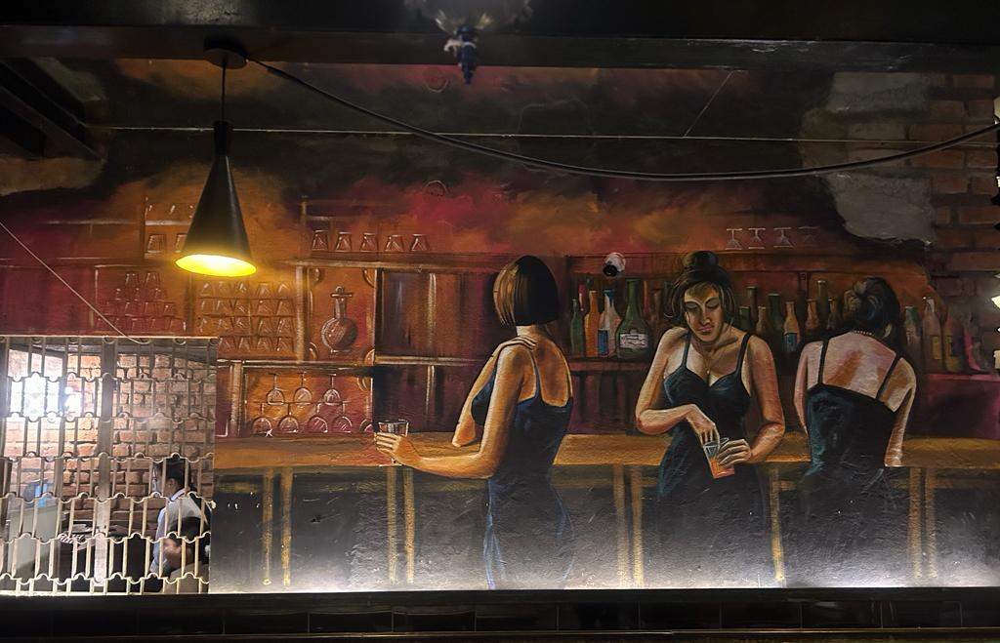
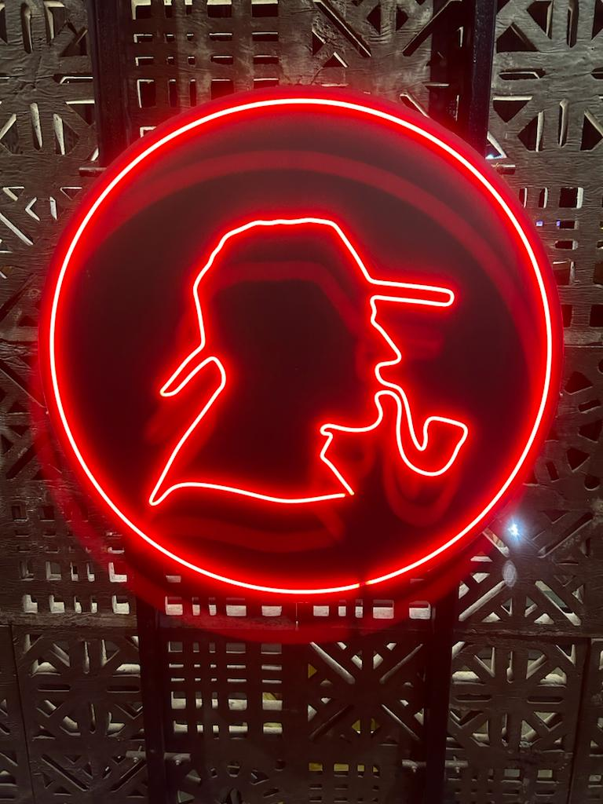
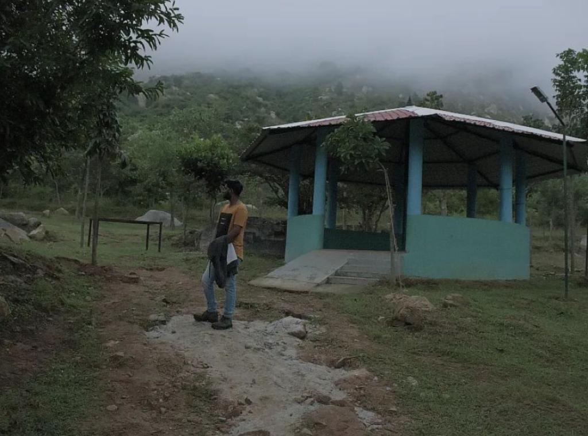

Welcome to my professional portfolio, a curated display of my academic and professional journey. I am Aryan Singh, a recent graduate with a Bachelor's degree in Computer Science, achieving an impressive 7.94 CGPA. Currently, I am further honing my skills through a rigorous Full Stack Development course at Knowledgehut Upgrad. Proficient in frontend technologies, I have successfully executed various projects, showcasing my practical expertise. My commitment to web development is underscored by a noteworthy internship at Compsoft Technologies, where I served as a frontend developer, contributing substantively to a key project. Explore my portfolio to witness the fusion of theoretical knowledge and applied skills.




anything mentioned for informationm
anything mentioned for informationm